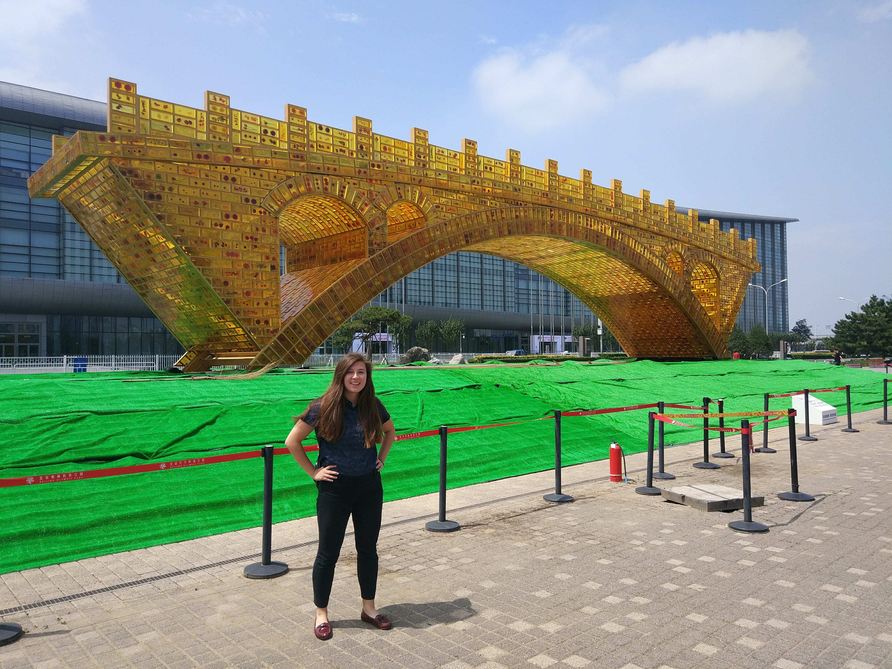

Cecilia Han Springer
Ph.D. Candidate, Energy and Resources Group
University of California, Berkeley

I am a Ph.D. candidate in the Energy and Resources Group at UC Berkeley, working at the intersection of energy, environment, and development. My research seeks to identify sustainable and just policies for energy systems in China and around the world. I also critically investigate the role of data and quantitative tools in policymaking. I am an interdisciplinary researcher, combining economic modeling, econometric analysis, and qualitative field work.